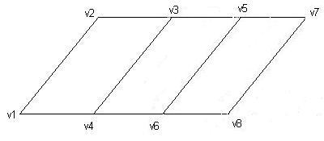

A quadrilateral strip similar to a triangle strip. However, quadrilateral strips begin with four vertices rather than three, and each additional quadrilateral primitive requires two additional vertices instead of one.
